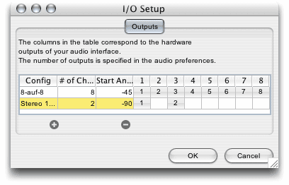

This window is designed in analogy to the I/O setup you may know from Protools. Now this is a sound editor so there are no busses except the master bus. What you can do here is to specify different routings from logical channels to physical channels of your audio hardware and vice versa.
The table lists all available setups. You can add a setup by pressing the "Plus" button or remove one by selecting its name and pressing the "Minus" button. The number of setups is not limited, but two setups cannot have the same name.
Each setup is characterized by a number of logical channels, their mapping to physical channels and a starting angle which is used as a layout hint for the panorama window. Note that for input routings, the angle field has no meaning. The number of physical channels of your audio interface is specified in the audio tab of the programme preferences. In the screenshot above you can see that the interface was specified to have eight channels, corresponding to the columns on the right side of the table.
Two output setups have been created: a one-to-one mapping setup for eight channels. Note that a start-angle of -45 degrees here means that when a channel's azimuth is set to -45 degrees, it will play on channel 1, if azimuth is zero degrees, it will play on channel 2 and so on. For the stereo setup, a channel's azimuth of -45 degrees will play on both channels but more on the left one. Moving the azimuth to -90 degrees will play only on the first channel, moving to +90 degrees will play only on the second logical channel which is assigned to the third interface channel, so this stereo setup was made for an eight channel studio.